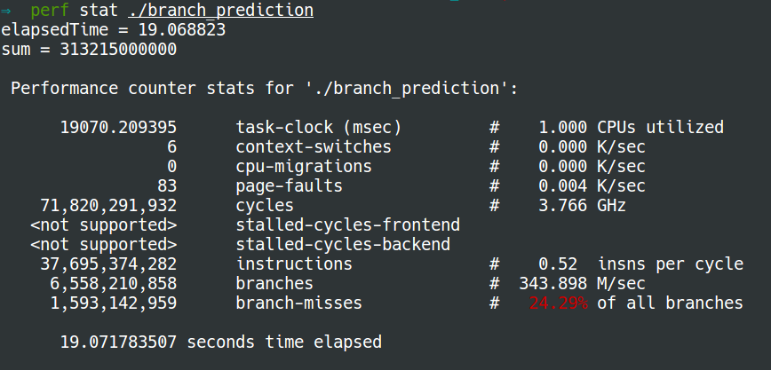
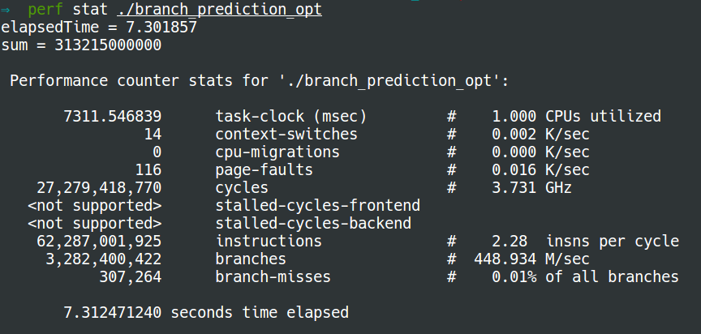

Branch Prediction
First let us look into the following program to get to know branch prediction:
#include <time.h>
#include <stdio.h>
#include <stdlib.h>
int cmpfunc (const void * a, const void * b) {
return ( *(int*)a - *(int*)b );
}
int main() {
// Generate data
const unsigned arraySize = 32768;
int data[arraySize];
srand((int)123);
for (unsigned c = 0; c < arraySize; ++c)
data[c] = rand() % 256;
// !!! With this, the next loop runs faster
/* qsort(data, arraySize, sizeof(int), cmpfunc); */
// Test
clock_t start = clock();
long long sum = 0;
for (unsigned i = 0; i < 100000; ++i) {
// Primary loop
for (unsigned c = 0; c < arraySize; ++c) {
if (data[c] >= 128)
sum += data[c];
}
}
double elapsedTime = ((double)(clock() - start)) / CLOCKS_PER_SEC;
printf("elapsedTime = %f\n", elapsedTime);
printf("sum = %llu\n", sum);
}
We use perf to check the number of branch misses:
without sorting 
with sorting

Why sorting makes difference?
At the processor level, it considers an if-statement as a branch instruction. The processor sees a branch and has no idea which way it will go. In computers, the processor doesn't know which direction a branch will go until the last moment. So it guesses which direction the branch will go!
- If it guessed right, continue executing.
- If it guessed wrong, flush the pipeline and roll back to the branch. Then it can restart down the other path.
If it guesses right every time, the execution will never have to stop. If it guesses wrong too often, the computer spends a lot of time stalling, rolling back, and restarting. This is branch prediction.
To minimize the number of wrong guess times, the processor looks at the past history. If "going left" 99% of the time, then it guesses left. If it alternates, then it alternates its guesses. If it goes one way every 3 times, it guesses the same. In other words, it tries to identify a pattern and follow it. This is more or less how branch predictors work.
Most applications have well-behaved branches. So modern branch predictors will typically achieve >90% hit rates. But when faced with unpredictable branches with no recognizable patterns, branch predictors are virtually useless. This why sorting makes much less branch predictions.
Optimization
To optimize the above program, we can remove if using the following lines, which are not easy to understand:
int t = (data[c] - 128) >> 31;
sum += ~t & data[c];
How this code works?
- If
data[c] >= 128, thent = 0,~t & data[c] = data[c]. - If
data[c] < 128, thent = -1,~t & data[c] = 0.
Therefore, the above two lines can work correctly as same as if. Please refer to the references if you would like to know the operators (>>, ~, &) in detail.
Now the number of branch misses with sorting is almost equal to that without sorting:
without sorting:

with sorting: 
References: